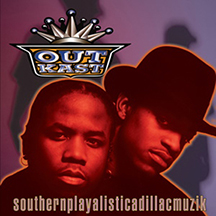
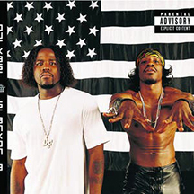
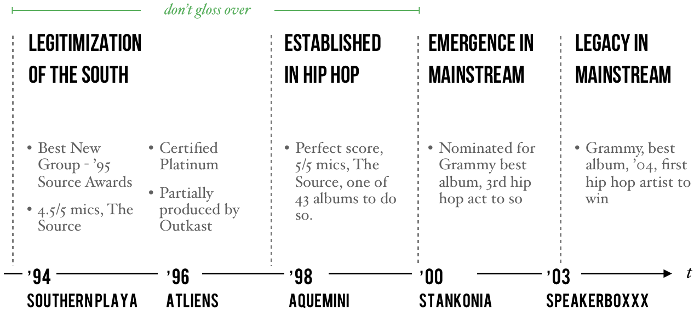

The Birth of Southern Slang
As a fan of hip hop etymology, I looked for Outkast's role as potential inventors of slang. Turns out that there’s definitely a case for Outkast's first use of "crunk" and "skeet".
What I never realized is that this is consistent with Outkast’s position as the face of southern hip hop – "crunk" and "skeet" both originated from the south. Southern themes in hip hop are intimately connected to Outkast's legacy.
Here's why: before Outkast, southern hip hop was jokingly called “country s---” by east/west-coast constituencies. People began to take the South more seriously when Outkast won the ’95 Source award for best new group. During the acceptance speech, the east/west-coast’s lack of respect for the south revealed itself in the form of boos from the audience.
Big Boi paid tribute to New York and “all the original MCs,” but Andre decided to rant, "I’m tired of the close-minded folks. We got a demo tape and no one wants to hear it. But the south got something to say—that’s all I got to say."
Outkast's Southern Sound: ATL Strip Clubs, Guitar Riffs, and Aliens
Beyond ATL slang, Outkast’s first four albums contain copious drawl and references to Atlanta (strip clubs, projects, neighborhoods, intersections, Cadillacs), creating a sound that was distinctly southern.
There are countless anecdotes that Atlanta was absolutely captivated by Outkast's early music. Their music was heard on every street corner and from cars driving by. Intersections and businesses referenced in the songs gained popularity. There’s even evidence of Puff Daddy directing Playa’s Ball (Outkast’s first single in ’94) and bringing Kangol hats back to NYC.
Outkast's sound became even more distinct when they began producing their own music on ATLiens (their second album). These self-produced songs are about aliens, stars, and Nuwabian Nation—just about as far as you can get from the glorification of pimps, guns, and drugs (east/west-coast themes).
Rather than emulate the east/west-coast sound and image, Outkast brought a totally new approach to hip hop. From the beginning, Big Boi and Andre prided themselves on originality (hence the name, Outkast – to be different from the rest of the hip hop scene). “Skeet" and “crunk” were just part of what Outkast’s southern roots brought to hip hop.
Outkast are from East Point and went to Tri-Cities HS. Outkast became a staple for the south since their music frequently references neighboring communities, such as College Park and Decatur, or businesses, such as strip club Magic City.

The Evolution of Outkast's Lyrical Themes
With Outkast’s second album, their lyrics shifted to a completely new style, filled with positivity, non-violence, southern-life hardship, and guitar riffs. The next album (Aquemini) would take that even further, focusing on drug addiction, poverty, and morality.
While this helped Outkast create a distinctive sound, it also reflected the events in their lives. What makes Outkast unique isn’t just their role in Southern hip hop, but unparalleled longevity – 6 outstanding albums across 12 years – chronicling their evolution from kids to adults, players to fathers, and relationships to break ups.

Life Events to Listen for on Outkast's Discography
Each album is filled with cues for what Andre and Big Boi were experiencing at the time of its production. These events help explain the positive themes that begin on Outkast’s second album: Andre makes big personal changes, adopting veganism and leaving the drinking/drugs lifestyle. By Aquemini, he’s experimenting with new musical styles and growing tired of rapping.
'94
- Attempt to represent (and give respect to) the South
- 17-year-olds making it up as they go
- Create a new sound with P-Funk
'96

- Tension from the boos at ’95 Source Awards
- Andre’s with Erykah Badu, adopts veganism, and explores Nuwaubian Nation
- Darker melodies from the death of Big’s aunt/mother.
'98

- Andre and Big Boi have kids
- Tension from breakup rumors
- Tension from Andre’s rejection of gangsta lifestyle
- Andre’s experimentation with singing
'00
- Andre-Erykah breakup (Ms. Jackson)
- Andre’s tired of hip hop – less rapping
Andre and Big Boi's Creative Approach

This is an obvious over-simplification and should convey Andre's movement away from hip hop – not Big Boi’s lack of experimentation. In fact, Big Boi's recent solo work has taken several experimental directions, helping fans clearly identify his role on early Outkast tracks.
What’s seemingly overlooked is Andre and Big Boi’s creative genius despite an increasingly divergent approach to music. Or as Big Boi puts it, "two unique, individual styles meshed together to make one monster mayhem musical mashup.”
Andre is experimenting and growing beyond hip hop, yet Big Boi is perfectly content with maintaining the gangsta persona. Naturally, the two men would eventually grow apart.
Outkast's Legacy
In retrospect, what stands out most is how Outkast introduced a sense of originality and cultural pride in southern hip hop. Their impact is felt through their distinct sounds, experimental approach to lyrics, and the elevation of southern slang. The legacy they built is not only rooted in their music but in the way they championed their heritage and influenced a generation of hip hop artists.
